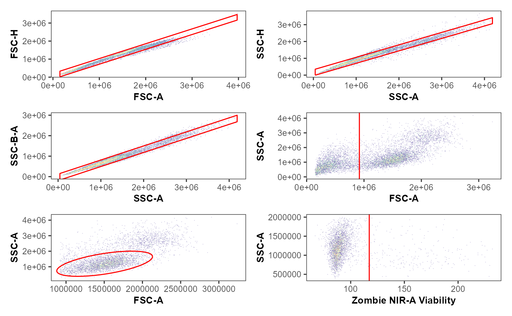
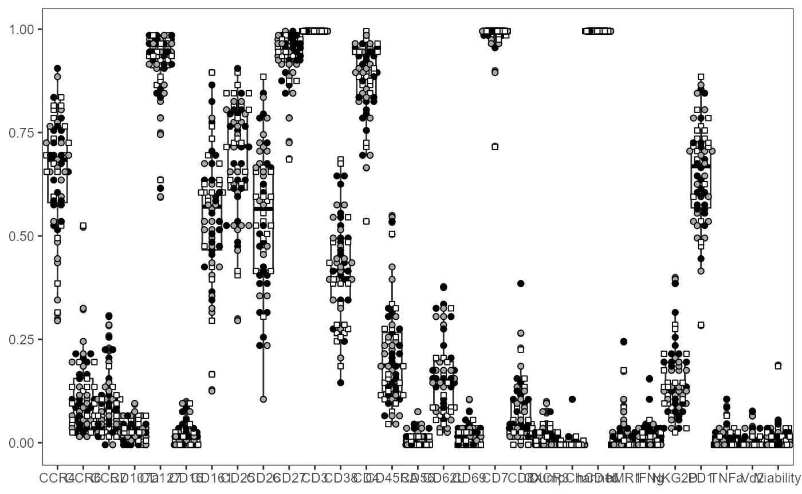
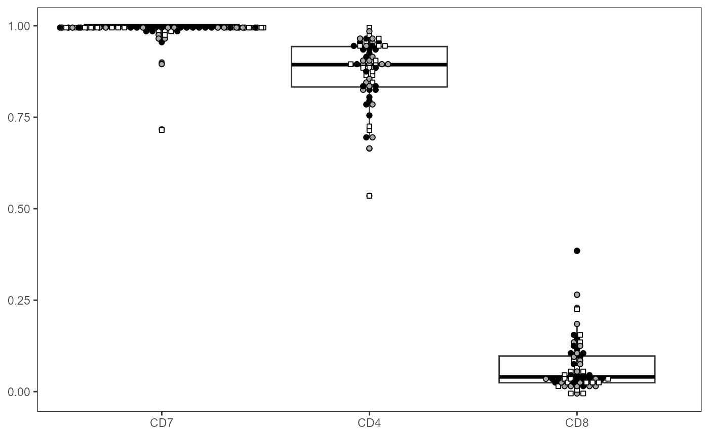
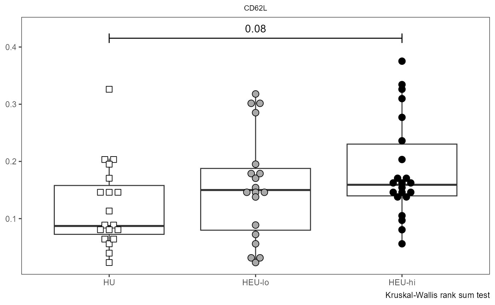
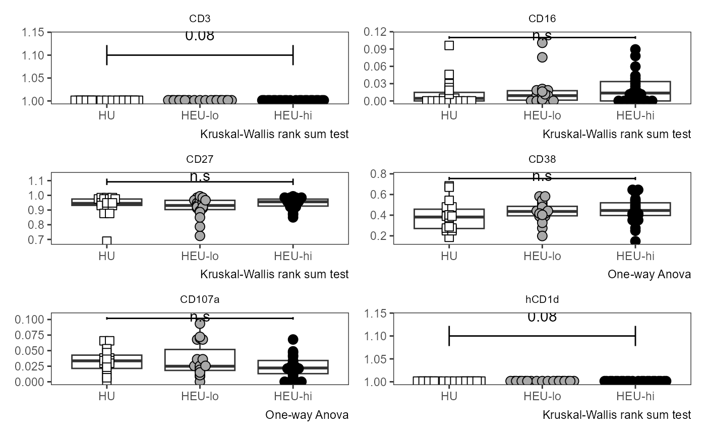
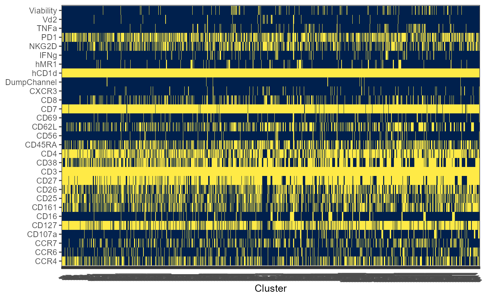

Getting Started with `Coereba`
David Rach
University of Maryland, Baltimoredrach@som.umaryland.edu
16 October 2024
Source:vignettes/GettingStarted.Rmd
GettingStarted.RmdAbstract
When working with high-dimensional cytometry data, whether from Spectral Flow Cytometry (SFC) or Mass Cytometry (MC), how many clusters of cells are present given certain markers is often a question that arises. “It depends” is the frequent non-commital answer. Coereba is an R package that attempts to provide tools to qualitatively and quantitatively assess the variation present for individual panels. It additionally leverages a semi-supervised analytical approach to enable working with datasets where batch effects limit current unsupervised approaches that rely heavily on consistent MFI across individual experiments and files.
Introduction
Historically, manual (supervised) gating has been widely used in cytometry, especially conventional flow cytometry (CFC) utilizing commercial software with graphical user interfaces, with hierarchical boolean gates drawn around cell populations of interest, sequentially filtering down to smaller subsets of cells that are of interest to the researcher. This approach has encountered limitations given the increase in resolvable markers (initially by mass cytometry (MC), more recently by spectral flow ctyometry (SFC)), and unsupervised methods utilizing algorithms to cluster cells based on median fluorescent intensity for individual markers have become increasingly widespread. By contrast, determining number of biological cell clusters present remains a concern for these methods, with individual methods outcomes dependent on the decisions driven by fully-algorithmic clusterings. Since these are dependent on the MFI values being consistent across individuals and experiments, they are susceptible to batch effects.
This is particularly the case with SFC data, which although comparable marker coverage as MC datasets, can collect far large number of cellular events. It is susceptible to loss resolution when improper unmixing controls are used, or when fluorophores degrade, additional autofluorescences are present. The combination of these result in unique challenges that we have noted elsewher. Alternative approaches implementing boolean gating templates checked by algorithms are in active development but struggle from individual variation due to biological heterogeneity, instrumental and experimental artifact.
Coereba is a collection of tools that takes a hybrid approach. Compared with traditional manual approaches that focus gating marker combinations at the single-individual before proceeding to the next, Coereba implements visualization across all specimens within a single view, and implements semi-supervised gating. It then allows for validation/correction at the individual level. The iteration is then over additional markers in the panel. From the sum of the gates across all markers on the basis of individual specimens, individual cells identities given markers of interest can be derrived and quantified using algorithmic tools. T
This extends the ability of manual gating to enable handling a greater number of markers, while allowing flexibility to handle batch effects and variation that algorithms dependent on normalized MFI would struggle to correctly classify. From this hybrid approach, we implement functions that showcase some novel uses in answering questions that neither fully supervised or unsupervised methods, both open-source or commercial, have been able to address. This package does not claim to be solution for all cytometry analysis, but we hope it can be a stepping stone to realizing the underlying problems that the current paradigms have, so that the next generation of developers can benefit from the knowledge base.
Getting Started
Installing Coereba
We are in the process of preparing Coereba for submission to Bioconductor later this year, for the moment however, it is available to install via GitHub.
if(!require("remotes")) {install.packages("remotes")}
remotes::install_github("https://github.com/DavidRach/Coereba")
# install.packages("BiocManager")
# BiocManager::install("Coereba")Loading Libraries
Coereba relies on underlying infrastructure provided flowWorkspace and other Bioconductor cytometry packages. It leverages functional programming principles implemented in tidyverse packages available via CRAN. It is important to make sure that all the required packages are installed on your computer, and that library is called for each.
library(Coereba)
library(flowCore)
library(flowWorkspace)
library(openCyto)
library(ggcyto)
library(data.table)
library(dplyr)
library(purrr)
library(stringr)
library(ggplot2)
library(gt)
library(plotly)
library(htmltools)Locating .fcs files
To get started, you will first need to provide the location on your computer where the .fcs files of interest are being stored. An example of how the author does this is provided below and can be modified for your own user and desired computer folder.
File_Location <- file.path("C:", "Users", "JohnDoe", "Desktop", "TodaysExperiment")
FCS_Pattern <- ".fcs$"
FCS_Files <- list.files(path = File_Location, pattern = FCS_Pattern, full.names = TRUE, recursive = FALSE)For this vignette, we will using several small .fcs files that can be found in Coereba’s extdata folder for our example.
File_Location <- system.file("extdata", package = "Coereba")
FCS_Pattern <- ".fcs$"
FCS_Files <- list.files(path = File_Location, pattern = FCS_Pattern, full.names = TRUE, recursive = FALSE)
head(FCS_Files, 3)
#> [1] "C:/Users/12692/AppData/Local/R/win-library/4.4/Coereba/extdata/DTR_2023_ILT_15_Tetramers-INF071-Ctrl_Tetramer_Unmixed.fcs"
#> [2] "C:/Users/12692/AppData/Local/R/win-library/4.4/Coereba/extdata/DTR_2023_ILT_15_Tetramers-INF149-Ctrl_Tetramer_Unmixed.fcs"
#> [3] "C:/Users/12692/AppData/Local/R/win-library/4.4/Coereba/extdata/DTR_2023_ILT_15_Tetramers-INF179-Ctrl_Tetramer_Unmixed.fcs"The folder contains three unmixed full-stained samples from a 29-color SFC panel, characterizing Innate-like T cells (ILT) in cord blood mononuclear cells (CBMCs). As rare circulating cells, the original .fcs files contained many cellular events, which makes them useful to show off Coereba’s capabilities at characterizing cells that were not the original focus.
Creating a GatingSet for Unmixed .fcs files
Working with the unmixed full-stained samples mentioned above, we will proceed by bringing the .fcs files found within Coereba’s extdata folder into a GatingSet object where we can interact with them.
UnmixedFCSFiles <- FCS_Files[c(1:3)]
UnmixedCytoSet <- load_cytoset_from_fcs(UnmixedFCSFiles, truncate_max_range = FALSE, transformation = FALSE)
UnmixedGatingSet <- GatingSet(UnmixedCytoSet)
UnmixedGatingSet
#> A GatingSet with 3 samplesNow that we have created a GatingSet object, we will identify the
markers/fluorophores present within the .fcs files, and exclude markers
from the list don’t require transformation (as is the case with FSC,
SSC). We will then bi-exponentially transform the data using flowWorkspace
flowWorkspace::flowjo_biexp_trans() before applying a
openCytogating
template that was customized for this particular panel, which can be
found in the extdata folder.
Markers <- colnames(UnmixedCytoSet)
KeptMarkers <- Markers[-grep("Time|FS|SC|SS|Original|-W$|-H$|AF", Markers)]
MyBiexponentialTransform <- flowjo_biexp_trans(channelRange = 256, maxValue = 1000000, pos = 4.5, neg = 0, widthBasis = -1000)
TransformList <- transformerList(KeptMarkers, MyBiexponentialTransform)
UnmixedGatingSet <- transform(UnmixedGatingSet, TransformList)
UnmixedGates <- fread(file.path(path = File_Location, pattern = 'GatesUnmixed.csv'))
UnmixedGating <- gatingTemplate(UnmixedGates)
#> Adding population:singletsFSC
#> Adding population:singletsSSC
#> Adding population:singletsSSCB
#> Adding population:nonDebris
#> Adding population:lymphocytes
#> Adding population:live
gt_gating(UnmixedGating, UnmixedGatingSet)
#> Gating for 'singletsFSC'
#> done!
#> done.
#> Gating for 'singletsSSC'
#> done!
#> done.
#> Gating for 'singletsSSCB'
#> done!
#> done.
#> Gating for 'nonDebris'
#> done!
#> done.
#> Gating for 'lymphocytes'
#> The prior specification has no effect when usePrior=no
#> Using the serial version of flowClust
#> The prior specification has no effect when usePrior=no
#> Using the serial version of flowClust
#> The prior specification has no effect when usePrior=no
#> Using the serial version of flowClust
#> done!
#> done.
#> Gating for 'live'
#> done!
#> done.
#> finished.
plot(UnmixedGatingSet)
We can additionally verify that the gating of the cell populations of interest was correct, by visualizing the gates using ggcyto or the Luciernaga package.
library(Luciernaga)
MyPlot <- Utility_GatingPlots(x=UnmixedGatingSet[1], sample.name=c("GROUPNAME", "TUBENAME"), removestrings=".fcs", subset="live", gtFile=UnmixedGates, DesiredGates=NULL, outpath = getwd(), export=FALSE, therows=3, thecolumns=2)
MyPlot
#> $`1`
Coereba_GateCutoffs
Having set up a GatingSet with transformations and gates applied, we
can proceed to test the Coereba workflow. The first step is
to create a .csv file, containing the individual specimens, and the
individual markers of interest. Each cell within the .csv file will
correspond to the MFI for a given marker for a given individual where
positive expression of a marker transitions to becoming a negative
(referred here to as a splitpoint).
These could be written out individually, or based on automated
calculations. To simplify the process, in Coereba, we have implemented
two approaches to estimating these splitpoints. One function is the
in-house Coereba_GateCutoffs(), which does an “okay-ish but
work-in progress”. The flip approach is leveraging the openCyto
pipeline (in development) and retrieving the values.
Both approaches can be computationally heavy, but still faster than eye-balling everything and typing in the values one-by-one. Save the eyestrain for subsequent validation steps.
TheGateCutoff <- Coereba_GateCutoffs(x=UnmixedGatingSet[1],
subset="live", sample.name="GROUPNAME", remove.strings=".fcs",
marker=c("BUV805-A"))
TheGateCutoffs <- map(.x=UnmixedGatingSet[1:3], .f=Coereba_GateCutoffs,
subset="live", sample.name="GROUPNAME", remove.strings=".fcs",
marker=c("BUV805-A")) %>% bind_rows()
TheGateCutoffs
#> specimen BUV805-A
#> 1 INF071 104
#> 2 INF149 94
#> 3 INF179 95Visualizing Gate Cutoffs
Once we have generated a GateCutoffs.csv file, we can visualize how
well the splitpoints were by plotting them as red-lines using the
Luciernaga packages Utility_NbyNPlots() to
visualize the markers for a given individual and
Utility_UnityPlots() to visualize the markers across
individuals. This a good way of understanding how well the competing
gating-algorithms did in the context of your individual panel, and how
much effort will be required for the next step in correcting the gates
individually.
Coereba_App
Previously, all adjustments to the above splitpoints had to
eye-balled in the pdf, and then adjusted in the .csv file, and repeated
ad nauseum. This obviously did not scale well. We have subsequently
created a ShinyApp that will bring in the GatingSet object, and plot an
interactive version of Utility_UnityPlot() from the
Luciernaga package, visualizing the splitpoint for a given
marker across all individuals as red vertical lines.
To get started, first make sure you know where the
Coereba_GateCutoffs() .csv output is saved at, as you will
need to select the file within the App.
File_Location <- system.file("extdata", package = "Coereba")
TheCSV <- file.path(File_Location, "GateCutoffsForNKs.csv")
TheCSVData <- read.csv(TheCSV, check.names=FALSE)
head(TheCSVData)
#> specimen BUV395-A BUV496-A BUV563-A BUV615-A BUV661-A BUV737-A BUV805-A
#> 1 INF071 90 105 155 100 100 105 95
#> 2 INF149 90 100 170 105 95 100 100
#> 3 INF179 95 110 165 105 95 115 100
#> BV421-A Pacific Blue-A BV480-A BV510-A BV605-A BV650-A BV711-A BV750-A
#> 1 100 105 80 120 90 135 120 150
#> 2 95 95 80 110 90 140 115 150
#> 3 100 95 80 110 95 145 115 150
#> BV786-A Alexa Fluor 488-A Spark Blue 550-A PerCP-Cy5.5-A PE-A PE-Cy5-A
#> 1 130 90 95 105 110 125
#> 2 120 90 95 100 105 110
#> 3 135 95 100 105 105 115
#> PE-Dazzle594-A PE-Vio770-A APC-A Alexa Fluor 647-A APC-R700-A Zombie NIR-A
#> 1 95 120 115 150 142 106
#> 2 94 115 115 130 146 104
#> 3 95 120 110 130 142 104
#> APC-Fire 750-A APC-Fire 810-A
#> 1 100 102
#> 2 100 100
#> 3 100 102Next, make sure to remember the name of your GatingSet (“UnmixedGatingSet” for this case), and the sample.name keyword to identify individual specimens, as you will need to input these values within the app.
Then, run the following command in your console:
The first tab view will let you upload the GateCutoff.csv file generated by the previous function, by letting you navigate to the storage folder and clicking on it.
Once this is done, navigate to the Upload a GatingSet tab. Enter the
information about your GatingSet (“UnmixedGatingSet” for this example),
select your x and y parameters, enter the SampleName keyword. Desired
bins allows adjustments to the visualization given the number of cells
present, clearance multiplier adjust the margins wiggle-room,
removestrings arguments. You specify margin and gate subsets like you
would for Utility_UnityPlots() and click Display Estimated
Gate Cutoffs. Finally, you click on Generate Plots and go retrieve your
coffee/tea/beverage-of-choice.
Upon loading of the plots, scroll until you encounter a splitpoint line that was placed incorrectly, you can simply click on the correct location of the axis, which will save the coordinate as a splitpoint for that given marker and individual to a data.frame. This will later be ported to update the corresponding splitpoint value for a given marker and individual in the exisiting GateCutoff .csv. By just clicking, you can therefore quickly correct cases where the algorithm failed to gate properly due to batch effects, bad staining, or algorithmic incompetence (sorry, the coders are still learning as well).
Once you have corrected some/all the markers, navigate to the Click Data tab. You can then export the click-data information by specifying a filename and providing an outpath to the folder you want to save at. Unfortunately, due to security issues in ShinyApps, you will need to type out the designated outpath manually.
And repeat until the markers you are interested have been validated and you have a folder of clickpoint .csvs awaiting conversion into the existing GateCutoff folder.
Since the code is within a ShinyApp running in R, it has both the advantages and disadvantages of a R Shiny App. It scales reasonably well, but can take a while to load the next iterated marker. During testing, loading a new marker to inspect took anywhere from 3-10 additional minutes. This area is a active work in progress to speed up, but the author/maintainer hasn’t had the time to finish reading Mastering Shiny by Hadley Wickham yet or implement it in Rust, if you have, feel free to assist!
Coereba_UpdateGates
Once you have completed validating the GateCutoffs with
Coereba_App(), it is time to convert your validated
click-data and update the GateCutoff.csv. To fascilitate this, provide
the location of the folder containing just the clickpoint .csv’s to
Coereba_UpdateGates() and fill out the required arguments.
It will proceed to update the GateCutoffs.
For this example, we will use ClickDataExamples.csv stored within
Coereba’s extdata folder:
File_Location <- system.file("extdata", package = "Coereba")
TheOldCSV <- file.path(File_Location, "GateCutoffsForNKs.csv")
TheClickInfo <- file.path(File_Location, "ClickDataExample.csv")
TheClickData <- read.csv(TheClickInfo, check.names=FALSE)
TheClickData
#> Plot_Name X_Label X_Coordinate Time
#> 1 INF071 BUV496-A 106 2024-10-16 15:26:43.98856
#> 2 INF149 BUV496-A 104 2024-10-16 15:26:47.052693
#> 3 INF179 BUV496-A 114 2024-10-16 15:26:50.278519The old data:
TheOldData <- read.csv(TheOldCSV, check.names=FALSE)
TheOldData
#> specimen BUV395-A BUV496-A BUV563-A BUV615-A BUV661-A BUV737-A BUV805-A
#> 1 INF071 90 105 155 100 100 105 95
#> 2 INF149 90 100 170 105 95 100 100
#> 3 INF179 95 110 165 105 95 115 100
#> BV421-A Pacific Blue-A BV480-A BV510-A BV605-A BV650-A BV711-A BV750-A
#> 1 100 105 80 120 90 135 120 150
#> 2 95 95 80 110 90 140 115 150
#> 3 100 95 80 110 95 145 115 150
#> BV786-A Alexa Fluor 488-A Spark Blue 550-A PerCP-Cy5.5-A PE-A PE-Cy5-A
#> 1 130 90 95 105 110 125
#> 2 120 90 95 100 105 110
#> 3 135 95 100 105 105 115
#> PE-Dazzle594-A PE-Vio770-A APC-A Alexa Fluor 647-A APC-R700-A Zombie NIR-A
#> 1 95 120 115 150 142 106
#> 2 94 115 115 130 146 104
#> 3 95 120 110 130 142 104
#> APC-Fire 750-A APC-Fire 810-A
#> 1 100 102
#> 2 100 100
#> 3 100 102We can then run Coereba_UpdateGates() and watch the
values for BUV469-A are updated.
UpdatedCSV <- Coereba_UpdateGates(Clicks=TheClickInfo, Old=TheOldCSV,
export=FALSE, outpath=NULL, fileName="UpdatedCSV")
UpdatedCSV
#> specimen BUV395-A BUV496-A BUV563-A BUV615-A BUV661-A BUV737-A BUV805-A
#> 1 INF071 90 106 155 100 100 105 95
#> 2 INF149 90 104 170 105 95 100 100
#> 3 INF179 95 114 165 105 95 115 100
#> BV421-A Pacific Blue-A BV480-A BV510-A BV605-A BV650-A BV711-A BV750-A
#> 1 100 105 80 120 90 135 120 150
#> 2 95 95 80 110 90 140 115 150
#> 3 100 95 80 110 95 145 115 150
#> BV786-A Alexa Fluor 488-A Spark Blue 550-A PerCP-Cy5.5-A PE-A PE-Cy5-A
#> 1 130 90 95 105 110 125
#> 2 120 90 95 100 105 110
#> 3 135 95 100 105 105 115
#> PE-Dazzle594-A PE-Vio770-A APC-A Alexa Fluor 647-A APC-R700-A Zombie NIR-A
#> 1 95 120 115 150 142 106
#> 2 94 115 115 130 146 104
#> 3 95 120 110 130 142 104
#> APC-Fire 750-A APC-Fire 810-A
#> 1 100 102
#> 2 100 100
#> 3 100 102We can further validate this by re-running Luciernaga
Utility_UnityPlots() using the updated GateCutoff.csv and
seeing if the previous issues have been corrected.
Note on Cell Populations and Splitpoint
During development, we have noticed that for SFC data, the splitpoint location can vary substantially for individual cell populations (B cells, NK cells, T cells, etc), even in the abscence of biology. We believe this is due to uncertainty in the unmixing, as we have observed a correlation of negative splitpoint MFI in relation to the individual cells kappa value (matrix complexity essentially). Try your best to have the gate reflect what you are interested in, reduce the amount of error as much as you can, and in numbers veritas. Keep track of the exceptions (more later) and write up a Cyto paper.
How Coereba works
Having a GateCutoff.csv containing the splitpoint information for each marker validated for each individual is immensely useful, allowing you to do many things you wouldn’t be capable of otherwise. Namely, we can for an individual anotate each cell within their .fcs file.
What do I mean? Let’s first think about all the cells circulating in an individuals bloostream. We don’t have any prior information in this example, but we want to profile these cells into clusters of similar cells. On one end of the spectra, there is a single cluster that contains every single cell from the sample, regardless of their marker expression. At the opposite end of the spectrum, every single cell clusters in an it’s own cluster with just itself. In between these two extremes, depending on our question, lies a meaningful cluster number that will match the underlying biology to reduce the amount of variance that lies in clumping/splitting populations needlessly.
Coereba takes the approacch by individually annotating
an individuals cells one by one, on the basis of where their MFI value
lands related to the validated splitpoint. So if the splitpoint for FITC
is at 50, and the individual cell MFI for FITC is 80, it returns as
FITC_pos. If the splitpoint for APC is at 70, and the individual cell
MFI is 30, it returns as APC_Neg.
When you iterate over the splitpoints for each marker, each cell derrives an identity. FITC_pos-APC_Neg-BV421_Pos…. etc. We can then group cells with matching identies and derrive information from these terminal nodes.
Individually, this may not mean much. After all, dichotomous splitting of a 30-marker panel is around half-a billion potential terminal nodes or clusters. Similarly, cytometers have instrumental, batch, experimental noise, etc.
But when we scale to all the events collected within a typical sample, we get far fewer terminal nodes, in the hundred to lower thousand range for a 30-color panel. The reason is cells (and the panels by which we investigate them) are not uniformely distributed by markers across high-dimensional space, cells fall within specific phenotypes (cell types) that undergo division of similar clones.
Consequently, we can iteratively leverage the number of markers included to target questions of interest, broad or narrow scope, in context of our individual panels, and rely on methods described below to gain insight into biological systems.
Utility_Coereba
Utility_Coereba() is the function that implements the
above approach, labelling for each individual specimen the individual
cells on the basis of their splitpoint identity, and then returning the
enumeration of the resulting clusters. It iterates over the different
specimens in the GatingSet, returning information for every individual
that can be used in subsequent steps. MultiReach() is the
older version of the proccess.
Both functions are currently waiting on the ILT paper to be sent to collaborators so that David can implement his 5-subject binder worth of notes to implement a S4 OOP class to make manipulating the final outputs easier than the current .qmd files full of tidyverse data tidying.
CoerebaIDs <- Utility_Coereba(x=UnmixedGatingSet[1], subsets="live",
sample.name="GROUPNAME", reference=TheCSV, starter="Spark Blue 550-A")
head(CoerebaIDs, 5)
#> Time SSC-W SSC-H SSC-A FSC-W FSC-H FSC-A SSC-B-W SSC-B-H
#> 1 489151 694896.9 1177500 1363735 662892.6 1401655 1548578 669076.8 709453
#> 2 635509 677491.4 1338055 1510868 657557.9 1233853 1352216 668161.4 884191
#> 3 120155 667338.2 1088296 1210436 674967.2 1192673 1341692 643509.0 824423
#> 4 618423 663132.6 1000850 1106160 672943.4 1502920 1685634 655194.3 624452
#> 5 819955 705859.9 1006763 1184389 667948.1 1483832 1651871 683451.8 695573
#> SSC-B-A BUV395-A BUV496-A BUV563-A BUV615-A BUV661-A BUV737-A
#> 1 791130.9 1413.02148 1389.7384 19557.074 -638.5002 804.1327 1086.85168
#> 2 984637.2 555.09723 -836.7988 22731.787 -170.2382 409.6551 -67.00184
#> 3 884206.0 1078.77063 90767.8750 5996.069 -720.3354 724.7059 1675.47351
#> 4 681895.6 10403.56543 -1566.0366 4183.058 1039.9783 299.8669 474.69431
#> 5 792317.7 97.86935 -120.9047 30680.348 -559.2359 -444.4741 1276.98914
#> BUV805-A BV421-A Pacific Blue-A BV480-A BV510-A BV605-A BV650-A
#> 1 -209.6748 860.4299 22337.6641 -481.8431 91305.57 893.18616 10386.127
#> 2 -170.9810 827.4207 16259.1738 1185.9927 68115.00 539.20172 33165.855
#> 3 515.8447 6500.4741 174.5799 2141.1963 59365.43 20.77773 15070.970
#> 4 37031.8125 6435.6250 587.8873 -1033.0054 1139.49 -1223.56738 9815.647
#> 5 -1093.8087 502.5733 17365.7285 -210.7086 79221.05 304.48538 14291.300
#> BV711-A BV750-A BV786-A Alexa Fluor 488-A Spark Blue 550-A
#> 1 559.8732 3667.3572 22802.184 699.9141 364.2365
#> 2 -302.7471 4064.6692 28469.223 -688.5756 720.5591
#> 3 50595.2422 2971.7854 2358.043 393.8389 17707.6602
#> 4 156903.0781 407.5031 5380.509 -1023.9891 27055.3672
#> 5 -183.1048 3351.0212 17993.840 -706.1895 258.5292
#> PerCP-Cy5.5-A PE-A PE-Dazzle594-A PE-Cy5-A PE-Vio770-A APC-A
#> 1 1075.7617 862.5351 1339.5979 505.8365 1125.7090 107.1248
#> 2 1223.7046 2884.0522 598.5916 4258.1323 2320.9243 2740.9094
#> 3 7140.4067 37509.9492 176.0248 1513.7799 801.8569 182.4485
#> 4 8106.1313 3367.9668 153.3160 1452.1102 2121.6941 -593.1661
#> 5 830.9669 1437.2294 769.9387 8262.6836 1377.1327 759.8859
#> Alexa Fluor 647-A APC-R700-A Zombie NIR-A APC-Fire 750-A APC-Fire 810-A
#> 1 27.81903 3060.771 1198.2706 244.2509 51100.332
#> 2 -2298.00781 43118.539 3153.7075 -241.0270 10196.429
#> 3 -392.17029 5435.576 1092.3571 29247.9004 7603.124
#> 4 305.19461 7350.345 140.0913 44089.8281 38608.691
#> 5 547.90692 2891.267 868.9808 377.6864 123643.883
#> AF-A Original_ID
#> 1 1539.555 993788
#> 2 4283.683 1295630
#> 3 1599.856 240648
#> 4 6442.587 1260488
#> 5 5996.440 1679432
#> Cluster
#> 1 SparkBlue550negBUV395negBUV496negBUV563negBUV615negBUV661negBUV737negBUV805negBV421negPacificBlueposBV480posBV510posBV605negBV650negBV711negBV750negBV786posAlexaFluor488negPerCPCy55negPEnegPEDazzle594negPECy5negPEVio770negAPCnegAlexaFluor647negAPCR700negZombieNIRnegAPCFire750negAPCFire810pos
#> 2 SparkBlue550negBUV395negBUV496negBUV563negBUV615negBUV661negBUV737negBUV805negBV421negPacificBlueposBV480posBV510posBV605negBV650posBV711negBV750negBV786posAlexaFluor488negPerCPCy55negPEnegPEDazzle594negPECy5negPEVio770negAPCnegAlexaFluor647negAPCR700posZombieNIRnegAPCFire750negAPCFire810pos
#> 3 SparkBlue550posBUV395negBUV496posBUV563negBUV615negBUV661negBUV737negBUV805negBV421posPacificBluenegBV480posBV510posBV605negBV650negBV711posBV750negBV786negAlexaFluor488negPerCPCy55posPEposPEDazzle594negPECy5negPEVio770negAPCnegAlexaFluor647negAPCR700negZombieNIRnegAPCFire750posAPCFire810pos
#> 4 SparkBlue550posBUV395posBUV496negBUV563negBUV615negBUV661negBUV737negBUV805posBV421posPacificBluenegBV480posBV510negBV605negBV650negBV711posBV750negBV786negAlexaFluor488negPerCPCy55posPEnegPEDazzle594negPECy5negPEVio770negAPCnegAlexaFluor647negAPCR700negZombieNIRnegAPCFire750posAPCFire810pos
#> 5 SparkBlue550negBUV395negBUV496negBUV563negBUV615negBUV661negBUV737negBUV805negBV421negPacificBlueposBV480posBV510posBV605negBV650negBV711negBV750negBV786posAlexaFluor488negPerCPCy55negPEnegPEDazzle594negPECy5posPEVio770negAPCnegAlexaFluor647negAPCR700negZombieNIRnegAPCFire750negAPCFire810pos
#> GROUPNAME
#> 1 INF071
#> 2 INF071
#> 3 INF071
#> 4 INF071
#> 5 INF071Filtering Coereba Clusters
Some things are literally poisson noise. Others are cell clusters with varying abundance across heteregenous human patients. Others are individually unique terminal nodes that can be the result of individual biology…. or unmixing errors … or your lab tech messing up the staining panel. You can leverage the filter functions to identify all of these quickly.
Coereba_MarkerExpressions
Having generated a Marker by Cluster data.frame (binaryData) and a Cluster by Specimen data.frame (dataData), we can leverage the combination of the two data.frames to aggregate the clusters on the basis of marker presence, returning the proportion of of cells that are positive for a given marker.
For this demonstration, we will focus on NKTs, using stored .csv files for their binary and data outputs stored within the Coereba extdata folder.
File_Location <- system.file("extdata", package = "Coereba")
panelPath <- file.path(File_Location, "ILTPanelTetramer.csv")
panelData <- read.csv(panelPath, check.names=FALSE)
binaryPath <- file.path(File_Location, "HeatmapExample.csv")
binaryData <- read.csv(binaryPath, check.names=FALSE)
dataPath <- file.path(File_Location, "ReadyFileExample.csv")
dataData <- read.csv(dataPath, check.names=FALSE)We will first just return the marker expressions for all markers:
library(Coereba)
AllMarkers <- Coereba_MarkerExpressions(data=dataData, binary=binaryData,
panel=panelData, starter="SparkBlue550")
head(AllMarkers, 5)
#> bid ptype ART Viral artexposure infant_sex screen_vl isc_artreg CD3
#> 1 INF018 HU HU NoViral Limited Male 0 0 1
#> 2 INF028 HU HU NoViral Limited Male 0 0 1
#> 3 INF039 HEU-hi HEU Viral Limited Female 41638 1 1
#> 4 INF041 HEU-lo HEU NoViral Prolongued Female 0 1 1
#> 5 INF052 HEU-hi HEU Viral Limited Male 15569 1 1
#> CD16 CD27 CD38 CD107a hCD1d hMR1 CD62L
#> 1 0.000000000 0.9565217 0.2608696 0.00000000 1 0.00000000 0.08695652
#> 2 0.005586592 0.9720670 0.4301676 0.03910615 1 0.08938547 0.06703911
#> 3 0.000000000 0.8947368 0.5263158 0.00000000 1 0.00000000 0.10526316
#> 4 0.012500000 0.9875000 0.4375000 0.02500000 1 0.00000000 0.15000000
#> 5 0.000000000 0.9259259 0.2716049 0.00000000 1 0.00000000 0.17283951
#> CD8 CD69 CCR4 Vd2 CXCR3 CD4 CD127
#> 1 0.00000000 0.00000000 0.6956522 0.000000000 0.04347826 1.0000000 0.8695652
#> 2 0.04469274 0.01117318 0.7877095 0.005586592 0.01117318 0.8994413 0.9608939
#> 3 0.10526316 0.05263158 0.5789474 0.000000000 0.00000000 0.8947368 0.9473684
#> 4 0.03750000 0.03750000 0.6875000 0.000000000 0.01250000 0.9000000 0.9125000
#> 5 0.02469136 0.02469136 0.6543210 0.000000000 0.01234568 0.9506173 0.9259259
#> CD161 CD45RA CD56 CCR7 CD7 IFNg CCR6
#> 1 0.6956522 0.04347826 0.0000 0.08695652 1.0000000 0.000000000 0.04347826
#> 2 0.5977654 0.11173184 0.0000 0.02793296 1.0000000 0.005586592 0.13966480
#> 3 0.4210526 0.26315789 0.0000 0.15789474 1.0000000 0.105263158 0.10526316
#> 4 0.6750000 0.21250000 0.0125 0.01250000 1.0000000 0.000000000 0.13750000
#> 5 0.4691358 0.06172840 0.0000 0.08641975 0.9876543 0.000000000 0.08641975
#> NKG2D CD25 TNFa PD1 DumpChannel CD26 Viability
#> 1 0.08695652 0.8695652 0.0000 0.7391304 0.0000000 0.6521739 0.000000000
#> 2 0.11173184 0.8156425 0.0000 0.6871508 0.0000000 0.5977654 0.005586592
#> 3 0.31578947 0.5263158 0.0000 0.5789474 0.1052632 0.3157895 0.000000000
#> 4 0.08750000 0.6250000 0.0375 0.7875000 0.0000000 0.6500000 0.012500000
#> 5 0.03703704 0.6790123 0.0000 0.6790123 0.0000000 0.2345679 0.000000000We can additionally by specifying returnType = “Combinatorial” derrive proportions within quadrant gates for two markers of interest. To do so, we specify the fluorophores corresponding to the markers as a list in the CombinatorialArgs.
MemoryQuadrants <- Coereba_MarkerExpressions(data=dataData, binary=binaryData,
panel=panelData, starter="SparkBlue550", returnType = "Combinatorial",
CombinatorialArgs = c("BV510", "BUV395"))
head(MemoryQuadrants, 5)
#> bid ptype ART Viral artexposure infant_sex screen_vl isc_artreg
#> 1 INF018 HU HU NoViral Limited Male 0 0
#> 2 INF028 HU HU NoViral Limited Male 0 0
#> 3 INF039 HEU-hi HEU Viral Limited Female 41638 1
#> 4 INF041 HEU-lo HEU NoViral Prolongued Female 0 1
#> 5 INF052 HEU-hi HEU Viral Limited Male 15569 1
#> CD45RA-CD62L+ CD45RA+CD62L+ CD45RA+CD62L- CD45RA-CD62L-
#> 1 0.04347826 0.04347826 0.00000000 0.9130435
#> 2 0.03910615 0.02793296 0.08379888 0.8491620
#> 3 0.05263158 0.05263158 0.21052632 0.6842105
#> 4 0.06250000 0.08750000 0.12500000 0.7250000
#> 5 0.14814815 0.02469136 0.03703704 0.7901235Utility_MarkerPlots
Having returned aggregated data above with
Coereba_MarkerExpressions, we can plot this data using
Utility_MarkerPlots(). These are combination of ggplot2
geom_boxplot() and ggbeeswarm
geom_beeswarm plots. We provide some arguments that allow for filtering
and reordering the markers shown in these plots, some basic
customizations to the plots, and the ability to save as a .png file to a
designated folder.
To do so for your own individual spots, you will need to specify a metadata column by which to factor by, and provide a list of shape and fill values corresponding to each factor level.
shape_ptype <- c("HU" = 22, "HEU-lo" = 21, "HEU-hi" = 21)
fill_ptype <- c("HU" = "white", "HEU-lo" = "darkgray", "HEU-hi" = "black")We can start by viewing all markers:
ThePlot <- Utility_MarkerPlots(data=AllMarkers, panel=panelData,
myfactor="ptype", shape_palette = shape_ptype, fill_palette = fill_ptype)
ThePlot
#> Warning: In `position_beeswarm`, method `center` discretizes the data axis (a.k.a the
#> continuous or non-grouped axis).
#> This may result in changes to the position of the points along that axis,
#> proportional to the value of `cex`.
#> This warning is displayed once per session.
Let’s abbreviate the number of columns by specifying the marker names to include (filterForThese), and rearrange them in desired X-axis order
ThePlot <- Utility_MarkerPlots(data=AllMarkers, panel=panelData,
myfactor="ptype", shape_palette = shape_ptype, fill_palette = fill_ptype,
filterForThese=c("CD7", "CD4", "CD8"), XAxisLevels = c("CD7", "CD4", "CD8"))
ThePlot
And to ggsave directly to a desired folder:
Utility_Stats
The Utility_Stats() and the
Utility_Behemoth() functions are either: “Great!!!”, or
guaranteed to make your friendly-local statistician cry (Opinions
vary).
Basically, Utility_Stats() is a coding-attempt to
replicate the typical immunologist workflow, cutting out the need to
copy-paste data from a .csv file into GraphPad Prism (trademark), run a
normality test, determine number of groups, and follow up with the
corresponding t-test/anova/non-parametric equivalents.
Utility_Behemoth() then takes these outputs, and adds the
p-value results to a ggbeeswarm/ggplot2 boxplot of the underlying data.
In combination with purrr and
Luciernaga Utility_Patchwork(), these can be
quickly formatted into a .pdf.
Does this workflow rapidly profile all the columns in your data.frame. Yes it does. Is it emblematic of potential issues arising from basing science entirely on null-hypothesis statistical testing? Also yes, seeing how many plots return “significant” due to a couple outliers. In the end, it mimics the current workflow of many researchers, just speeding it up. Google Statistical Rethinking on YouTube for food-for-thought.
To begin, we will use the Coereba_MarkerExpressions data
we generated above to test out Utility_Stats().
Result <- Utility_Stats(data=AllMarkers, var="CD62L",
myfactor="ptype", normality="dagostino", correction="none")
Result
#> marker pvalue normality
#> 1 CD62L 0.0768724663243597 nonparametricIn combination with purrr we can rapidly iterate over all the markers, but will need to skip over the metadata columns that are present at the begining of the dataframe.
library(purrr)
library(dplyr)
# colnames(AllMarkers)
TheLength <- ncol(AllMarkers)
TheData <- map(names(AllMarkers)[c(9:TheLength)], ~ Utility_Stats(
data = AllMarkers, var = .x, myfactor = "ptype",
normality = "dagostino")) %>% bind_rows()
#> Warning in wilcox.test.default(xi, xj, paired = paired, ...): cannot compute
#> exact p-value with ties
#> Warning in wilcox.test.default(xi, xj, paired = paired, ...): cannot compute
#> exact p-value with ties
#> Warning in wilcox.test.default(xi, xj, paired = paired, ...): cannot compute
#> exact p-value with tiesThe results can be filtered using regular dplyr functions.
Utility_Behemoth
Utility_Behemoth() continues from where
Utility_Stats() left-off, appending the resulting p-value
information onto a ggplot2 plot. The plot is a combination of ggplot2
geom_boxplot() and ggbeeswarm
geom_beeswarm plots, and accepts arguments to customize these and
rearrange the group order. As with most Coereba plots, we
need to provide the shape and fill for our respective factors
levels.
To do so for your own individual spots, you will need to specify a metadata column by which to factor by, and provide a list of shape and fill values corresponding to each factor level.
shape_ptype <- c("HU" = 22, "HEU-lo" = 21, "HEU-hi" = 21)
fill_ptype <- c("HU" = "white", "HEU-lo" = "darkgray", "HEU-hi" = "black")
SinglePlot <- Utility_Behemoth(data=AllMarkers, var="CD62L",
myfactor="ptype", normality="dagostino", correction="none",
shape_palette=shape_ptype, fill_palette=fill_ptype,
XAxisLevels = c("HU", "HEU-lo", "HEU-hi"))
SinglePlot
In combination with purrr we can
rapidly iterate over all the markers (skipping the initial metadata
colums) and generate all the plots. These can then be passed to
Luciernaga Utility_Patchwork() to rearrange
into patchwork objects with our desired layout, and passed to a .pdf
file.
# colnames(AllMarkers)
TheLength <- length(AllMarkers)
AllPlots <- map(names(AllMarkers)[c(9:TheLength)], ~ Utility_Behemoth(data=AllMarkers, var=.x,
myfactor="ptype", normality="dagostino", correction="none",
shape_palette=shape_ptype, fill_palette=fill_ptype, corral.width=0.7,
XAxisLevels = c("HU", "HEU-lo", "HEU-hi")))
#> Warning in wilcox.test.default(xi, xj, paired = paired, ...): cannot compute
#> exact p-value with ties
#> Warning in wilcox.test.default(xi, xj, paired = paired, ...): cannot compute
#> exact p-value with ties
#> Warning in wilcox.test.default(xi, xj, paired = paired, ...): cannot compute
#> exact p-value with tiesThese in turn can be passed to Luciernaga
`Utility_Patchwork() function to arrange desired layout and output to a
.pdf file for late reference.
library(Luciernaga)
StorageLocation <- file.path("C:", "Users", "JohnDoe", "Desktop")
TheAssembledPlot <- Utility_Patchwork(x=AllPlots, filename="NKT_Markers",
outfolder=NULL, thecolumns=2, therows=3, width=7, height=9,
returntype="patchwork")
TheAssembledPlot[1]
#> $`1`
Utility_Heatmap
The original visualization for the Coereba clusters, in a Bananaquit color-scheme. Next time someone insist there are just 5 clusters in their FlowSOM, point them here.
ThePlot <- Utility_Heatmap(binary=binaryData, panel=panelPath,
export=FALSE, outpath=NULL, filename=NULL)
ThePlot
Diffcyt port
Wrote the function to send the outputs to diffcyt for the edgeR/limma/GLMM modeling of the results (vs the above t-test approach). It works, but does it mean it’s less p-hacky? TBD. Also, given diffcyt’s current maintenance status (looking at you Luke), may not be best approach vs a new implementation.
#> R version 4.4.1 (2024-06-14 ucrt)
#> Platform: x86_64-w64-mingw32/x64
#> Running under: Windows 11 x64 (build 22631)
#>
#> Matrix products: default
#>
#>
#> locale:
#> [1] LC_COLLATE=English_United States.utf8
#> [2] LC_CTYPE=English_United States.utf8
#> [3] LC_MONETARY=English_United States.utf8
#> [4] LC_NUMERIC=C
#> [5] LC_TIME=English_United States.utf8
#>
#> time zone: America/New_York
#> tzcode source: internal
#>
#> attached base packages:
#> [1] stats graphics grDevices utils datasets methods base
#>
#> other attached packages:
#> [1] Luciernaga_0.99.1 htmltools_0.5.8.1 plotly_4.10.4
#> [4] gt_0.11.1 stringr_1.5.1 purrr_1.0.2
#> [7] dplyr_1.1.4 data.table_1.16.2 ggcyto_1.32.0
#> [10] ncdfFlow_2.50.0 BH_1.84.0-0 ggplot2_3.5.1
#> [13] openCyto_2.16.1 flowWorkspace_4.16.0 flowCore_2.16.0
#> [16] Coereba_0.99.0 BiocStyle_2.32.1
#>
#> loaded via a namespace (and not attached):
#> [1] RBGL_1.80.0 gridExtra_2.3 rlang_1.1.4
#> [4] magrittr_2.0.3 matrixStats_1.4.1 ggridges_0.5.6
#> [7] compiler_4.4.1 dir.expiry_1.12.0 png_0.1-8
#> [10] systemfonts_1.1.0 vctrs_0.6.5 reshape2_1.4.4
#> [13] pkgconfig_2.0.3 fastmap_1.2.0 backports_1.5.0
#> [16] labeling_0.4.3 utf8_1.2.4 promises_1.3.0
#> [19] rmarkdown_2.28 graph_1.82.0 ggbeeswarm_0.7.2
#> [22] ragg_1.3.3 xfun_0.48 zlibbioc_1.50.0
#> [25] cachem_1.1.0 jsonlite_1.8.9 highr_0.11
#> [28] later_1.3.2 SnowballC_0.7.1 broom_1.0.7
#> [31] parallel_4.4.1 R6_2.5.1 bslib_0.8.0
#> [34] stringi_1.8.4 RColorBrewer_1.1-3 reticulate_1.39.0
#> [37] lubridate_1.9.3 jquerylib_0.1.4 figpatch_0.2
#> [40] Rcpp_1.0.13 bookdown_0.41 knitr_1.48
#> [43] zoo_1.8-12 httpuv_1.6.15 Matrix_1.7-0
#> [46] timechange_0.3.0 tidyselect_1.2.1 rstudioapi_0.17.0
#> [49] yaml_2.3.10 viridis_0.6.5 timeDate_4041.110
#> [52] lattice_0.22-6 tibble_3.2.1 plyr_1.8.9
#> [55] withr_3.0.1 shiny_1.9.1 Biobase_2.64.0
#> [58] basilisk.utils_1.16.0 evaluate_1.0.1 Rtsne_0.17
#> [61] desc_1.4.3 xml2_1.3.6 pillar_1.9.0
#> [64] lsa_0.73.3 BiocManager_1.30.25 filelock_1.0.3
#> [67] stats4_4.4.1 generics_0.1.3 S4Vectors_0.42.1
#> [70] munsell_0.5.1 scales_1.3.0 timeSeries_4041.111
#> [73] xtable_1.8-4 glue_1.8.0 lazyeval_0.2.2
#> [76] tools_4.4.1 hexbin_1.28.4 spatial_7.3-17
#> [79] fBasics_4041.97 fs_1.6.4 XML_3.99-0.17
#> [82] grid_4.4.1 flowClust_3.42.0 tidyr_1.3.1
#> [85] RProtoBufLib_2.16.0 colorspace_2.1-1 patchwork_1.3.0
#> [88] basilisk_1.16.0 beeswarm_0.4.0 vipor_0.4.7
#> [91] cli_3.6.3 textshaping_0.4.0 fansi_1.0.6
#> [94] cytolib_2.16.0 viridisLite_0.4.2 uwot_0.2.2
#> [97] Rgraphviz_2.48.0 gtable_0.3.5 sass_0.4.9
#> [100] digest_0.6.37 BiocGenerics_0.50.0 htmlwidgets_1.6.4
#> [103] farver_2.1.2 pkgdown_2.1.1 lifecycle_1.0.4
#> [106] httr_1.4.7 mime_0.12